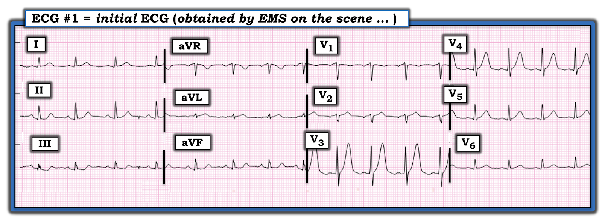
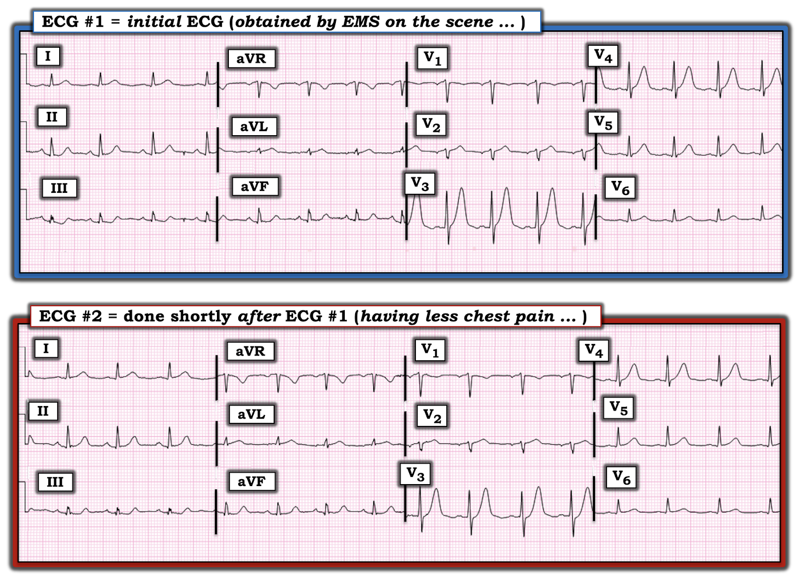

ECG Blog #260 (1) — Một thay đổi tái cực?
Điện tâm đồ trong Hình-1 được ghi ở một người đàn ông khoảng 60 tuổi, được đội cấp cứu ngoài viện (EMS) thăm khám tại hiện trường vì đau ngực mới khởi phát. Không có tiền sử bệnh tim trước đó.
- Bạn có nên kích hoạt phòng thông tim (cath lab) không?
- NẾU có — Bạn dự đoán sẽ thấy gì khi chụp mạch vành?


SUY NGHĨ CỦA TÔI về điện tâm đồ #1:
Như thường lệ — tôi đọc điện tâm đồ #1 theo một Cách tiếp cận hệ thống (Xem ECG Blog #205 để biết chi tiết):
- Tần số & Nhịp: Có nhịp xoang đều (với sóng P dẫn truyền dương ở chuyển đạo II) — tần số ~100/phút (vì vậy là nhịp nhanh xoang).
- Các khoảng (PR, QRS, QTc) — Khoảng PR bình thường, và phức bộ QRS không giãn rộng. Với tần số tim khá nhanh — tôi nghĩ QTc không kéo dài.
- Trục: Bình thường (khoảng +50 độ).
- Lớn các buồng tim: Không có.
Về Thay đổi Q-R-S-T:
- Sóng Q: Dường như có sóng q rất nhỏ ở các chuyển đạo dưới và các chuyển đạo trước tim bên. Những sóng này ít có khả năng có ý nghĩa lâm sàng.
- Tăng tiến sóng R: Vùng chuyển tiếp (nơi chiều cao sóng R vượt quá độ sâu sóng S ở các chuyển đạo trước tim) xảy ra bình thường (tức là, giữa chuyển đạo V2 và V3). Có thể đã đặt sai vị trí điện cực V2 — vì sóng r ở V2 trông nhỏ hơn sóng r ở V1, trước khi trở nên cao bất thường với vùng chuyển tiếp đột ngột ở V3. Ngoài ra — sóng P ở V1,V2 âm (trước khi trở nên dương rõ rệt ở V3) — và — hình dạng QRS trông giống nhau ở aVR, V1 và V2 (Tôi bàn về các MANH MỐI để nhận ra việc đặt quá cao điện cực V1 và V2 trong phần Bình luận của tôi ở CUỐI trang của các bài ngày 4 tháng 11 năm 2018 và 29 tháng 3 năm 2020 trên Dr. Smith's ECG Blog).
Về Thay đổi ST-sóng T:
- Nổi bật hơn hẳn — Dấu hiệu đáng chú ý nhất trên bản ghi này là sóng T nổi bật quá mức ở chuyển đạo V3 và V4. Sóng T ở V3 có hình nhọn và kích thước khổng lồ! (Nó cao không dưới 12-13 mm — và cao hơn cả sóng R vốn khá cao ở chuyển đạo này).
- Dù sóng T ở V4 không còn cao hơn sóng R tương ứng ở chuyển đạo này — nó vẫn trông cao-hơn-mức-cần-có, ngoài ra còn có hình nhọn với đáy rộng-hơn-dự-kiến. Vì vậy, ở một bệnh nhân đau ngực mới khởi phát — sóng T ở chuyển đạo V3 và V4 phải được xem là "tối cấp" cho đến khi chứng minh được điều ngược lại (Xem Audio Pearl-35a bên dưới).
- ĐIỂM THEN CHỐT (PEARL) #1: Nếu nhìn riêng lẻ — sóng T ở V5 có thể không hẳn có vẻ bất thường. Tuy nhiên, trong bối cảnh "chuyển đạo lân cận" (tức là, sóng T ở các chuyển đạo lân cận V3 và V4 rõ ràng bất thường) — tôi cho rằng sóng T ở V5 cũng có thể tích lớn hơn-mức-cần-có, xét biên độ nhỏ của sóng R ở chuyển đạo này.
- ĐIỂM THEN CHỐT (PEARL) #2: Như đã nêu ở trên (trong phần đánh giá Tăng tiến sóng R) — có những dấu hiệu gợi ý điện cực V2 có thể bị đặt sai vị trí. Điều này quan trọng — vì việc đặt điện cực V1 và V2 cao hơn 1 hoặc 2 khoang liên sườn trên ngực có thể là lý do không thấy sóng T tối cấp ở các chuyển đạo này.
Ở các chuyển đạo chi:
Các thay đổi ở chuyển đạo chi rất tinh tế. Dù vậy, trong bối cảnh sóng ST-T bất thường rõ rệt ở nhiều chuyển đạo trước tim — tôi nghĩ những thay đổi ST-T tinh tế ở chuyển đạo dưới này là có thật. Hãy lưu ý những điểm sau:
- Đoạn ST ở III dốc xuống. Sóng T ở chuyển đạo này hai pha, với phần cuối dương.
- Đoạn ST ở aVF dẹt (dù không chênh lên cũng không chênh xuống).
- Phức bộ QRS ở aVL rất nhỏ — khiến việc đánh giá sóng ST-T khó khăn. Dù vậy, với biên độ rất nhỏ của sóng R ở chuyển đạo này — tôi nghĩ đáy rộng và chiều cao sóng T (bằng chiều cao của sóng R nhỏ ở aVL) thể hiện một thay đổi tối cấp.
NHẬN ĐỊNH: Với bệnh sử đau ngực mới khởi phát ở một người đàn ông khoảng 60 tuổi — từ điện tâm đồ trong Hình-1, người ta buộc phải giả định rằng một biến cố tim cấp đang diễn ra cho đến khi chứng minh được điều ngược lại.
- Không chỉ đơn thuần là sóng T tối cấp — hình dạng nhọn và kích thước khổng lồ của sóng T ở V3 và V4 phù hợp với sóng T kiểu de Winter. Điều này gợi ý mạnh khả năng tắc cấp đoạn gần LAD (động mạch liên thất trước — Left Anterior Descending) (Xem Audio Pearl-1 bên dưới — và ECG Blog #183 để biết thêm về chủ đề này).
MẤU CHỐT: Càng nhiều chuyển đạo biểu hiện bất thường sóng ST-T — khả năng tắc cấp đoạn gần LAD đang diễn ra càng cao.
- Như đã nêu ở trên (theo khái niệm chuyển đạo "lân cận") — V5 có lẽ biểu hiện sự tiếp nối của các thay đổi cấp thấy ở V3 và V4.
- Chỉnh lại vị trí đặt điện cực V2 (và có thể cả V1) — có thể làm vùng biểu hiện thay đổi cấp mở rộng ra, bao gồm cả 2 chuyển đạo này.
- Cuối cùng — Cộng thêm các bất thường sóng ST-T tinh-tế-nhưng-có-thật đã mô tả ở trên tại III, aVF và aVL càng củng cố rằng những dấu hiệu điện tâm đồ này là có thật.
Ca bệnh TIẾP TỤC:
Một điện tâm đồ thứ 2 được ghi trong lúc vận chuyển bệnh nhân đến bệnh viện. Cơn đau ngực của ông đã giảm (nhưng chưa hết hoàn toàn) vào thời điểm ghi điện tâm đồ #2 (Hình-2).
- Vì triệu chứng của bệnh nhân đã giảm — bác sĩ khoa Cấp cứu (ED — Emergency Department) tiếp nhận đã huỷ kích hoạt thông tim khi xem điện tâm đồ #2.
CÂU HỎI:
- Bạn nghĩ gì về cách xử trí trên?
- Bạn có thấy bất kỳ thay đổi nào giữa 2 bản ghi trong Hình-2 không?


SUY NGHĨ CỦA TÔI khi xem điện tâm đồ #2:
MẤU CHỐT để so sánh chính xác các bản ghi nối tiếp — là đánh giá xem trục mặt phẳng trán và vị trí đặt chuyển đạo trước tim có tương đương nhau không (Xem Audio Pearl-46a bên dưới).
- Hình dạng và biên độ QRS, cũng như trục mặt phẳng trán — gần như giống hệt nhau ở điện tâm đồ #2 so với điện tâm đồ #1. Biết điều này giúp việc so sánh các bản ghi nối tiếp dễ dàng hơn — và cho ta biết mọi thay đổi đáng kể thấy được giữa điện tâm đồ #1 và điện tâm đồ #2 nhiều khả năng là có thật.
- So sánh kỹ cho thấy không có thay đổi đáng kể ở chuyển đạo chi giữa 2 bản ghi này.
- Có thay đổi tinh tế thật sự ở các chuyển đạo trước tim. BẠN có thấy rằng hiện có điểm J chênh xuống tinh-tế-nhưng-có-thật ở V3 của điện tâm đồ #2 — trong khi không có điểm J chênh xuống ở V3 của điện tâm đồ #1 không? Ngoài ra, sóng T ở V3, V4 và V5 đều trông bớt tối cấp hơn một chút (tức là, thấp hơn một chút và có thể tích nhỏ hơn) so với ở điện tâm đồ #1.
Bạn có huỷ kích hoạt phòng thông tim không?
Dù cơn đau ngực đã giảm và các thay đổi sóng T tối cấp ở V3, V4 và V5 đã bớt một chút trên điện tâm đồ #2 (so với điện tâm đồ #1 ghi vài phút trước đó) — bệnh nhân này bị đau ngực mới khởi phát, nặng đến mức phải gọi EMS đến nhà — và — trong bối cảnh lâm sàng này, điện tâm đồ #1 cho thấy bất thường sóng ST-T ở không dưới 6 chuyển đạo, phù hợp với sóng T kiểu de Winter. Theo Audio Pearl-1 bên dưới và ECG Blog #183 — nhận ra bệnh cảnh lâm sàng này cho bạn biết đang có tắc cấp đoạn gần LAD cho đến khi bạn chứng minh được điều ngược lại!
- ĐIỂM THEN CHỐT (PEARL) #3: Trong mô tả ban đầu của deWinter và cs. về hội chứng này — có ít nhất 1 mm điểm J chênh xuống ở một hoặc nhiều chuyển đạo trước, trước khi đi lên đột ngột thành sóng T nhọn khổng lồ. Việc điểm J chênh xuống này nay đã xuất hiện ở V3 của điện tâm đồ #2 (trong khi chưa thấy ở điện tâm đồ #1) — càng củng cố rằng nhiều khả năng chúng ta đang đối mặt với sóng T de Winter (và với tắc cấp đoạn gần LAD).
- Ngay cả NẾU trong trường hợp TỐT NHẤT, việc giảm đau ngực và sự cải thiện nhẹ của sóng T tối cấp trên điện tâm đồ #2 là dấu hiệu của một mức độ tái tưới máu tự phát nào đó — quá trình tắc động mạch vành cấp có thể diễn ra ngắt quãng (stuttering), đôi khi trải qua giai đoạn tự mở thông rồi lại tắc lại tự phát một hoặc nhiều lần cho đến khi đạt được một giai đoạn ổn định hơn. Vì lý do này — kích hoạt phòng thông tim cấp vẫn có chỉ định mặc dù triệu chứng đã cải thiện! (Xem Audio Pearl-39a bên dưới).
KẾT LUẬN ca bệnh:
Như đã nêu — thông tim ban đầu đã bị huỷ. Troponin tim trả về tăng rất cao — và thông tim được thực hiện vào sáng hôm sau. Phát hiện một tổn thương huyết khối hẹp 95-99% ở đoạn gần LAD.
=======================================
LƯU Ý: Tôi nhắc lại dưới đây các Audio Pearl liên quan đến ca hôm nay:
=======================================

ECG Media PEARL #1 (3:00 phút Audio) hôm nay — Ôn lại khái niệm sóng T de Winter (và sự thường gặp của các biến thể của "chủ đề" này ).

ECG Media PEARL #35a (4:50 phút Audio) — KHI NÀO một sóng T là Tối cấp so với một biến thể tái cực?

ECG Media PEARL #39a (4:50 phút Audio) — Ôn lại khái niệm Thay đổi sóng ST-T động (và cách dấu hiệu điện tâm đồ này có thể giúp xác định có chỉ định thông tim cấp hay không).

ECG Media PEARL #46a (6:35 phút Audio) — Ôn lại CÁCH so sánh các điện tâm đồ nối tiếp (tức là, "Bạn đang so táo với táo hay với cam?").
==================================
Lời cảm ơn: Xin cảm ơn David Didlake và Dillon Stapp (từ Texas, Hoa Kỳ) đã cho phép tôi sử dụng ca bệnh và các bản ghi này.
==================================
Các bài ECG Blog liên quan đến ca hôm nay:
- ECG Blog #205 — Ôn lại Cách tiếp cận hệ thống của tôi để đọc điện tâm đồ 12 chuyển đạo.
- ECG Blog #183 — Ôn lại khái niệm Sóng T de Winter (kèm bản sao Hình minh hoạ từ bài báo gốc của deWinter trên NEJM).
- ECG Blog #222 — Ôn lại khái niệm thay đổi ST-sóng T động, trong bối cảnh một ca lâm sàng chi tiết.
- ECG Blog #218 — Ôn lại CÁCH xác định một sóng T là Tối cấp?
- ECG Blog #230 — Ôn lại CÁCH so sánh các điện tâm đồ nối tiếp (tức là, "Bạn đang so táo với táo hay với cam?").
- ECG Blog #193 — Ôn lại lý do vì sao thuật ngữ “OMI” ( = nhồi máu cơ tim do tắc — Occlusion-based MI) nên thay thế thuật ngữ STEMI quen thuộc hơn — và — ôn lại những điều cơ bản về cách dự đoán động mạch "thủ phạm" .
- ECG Blog #194 — Ôn lại cách nhận biết NẾU động mạch “thủ phạm” (tức là, bị tắc cấp) đã tái tưới máu dựa vào dữ liệu lâm sàng và điện tâm đồ.
- ECG Blog #115 — Trình bày một ví dụ về việc điện tâm đồ có thể thay đổi mạnh mẽ đến mức nào chỉ trong vỏn vẹn 8 phút.
3 manh mối gợi ý đặt điện cực V1 & V2 quá cao:
- Xem Bình luận của tôi ở CUỐI trang của bài ngày 4 tháng 11 năm 2018 trên Dr. Smith’s ECG Blog.
- Xem Bình luận của tôi ở CUỐI trang của bài ngày 29 tháng 3 năm 2020 trên Dr. Smith’s ECG Blog (cụ thể là Pearl #3 của tôi).